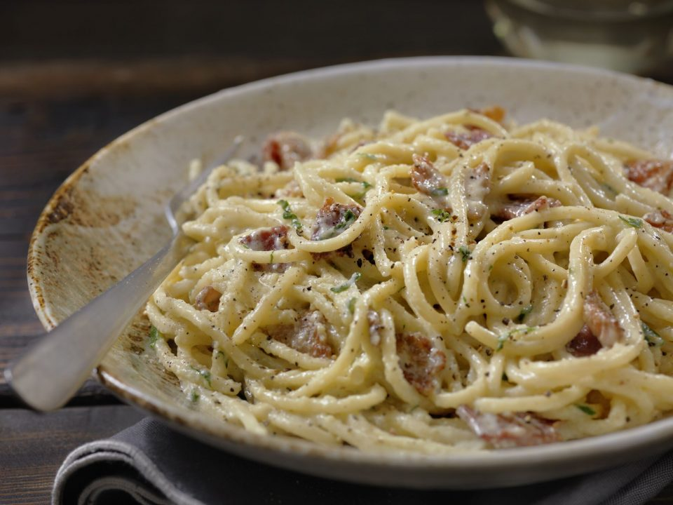

Pasta Carbonara

Pasta carbonara
This is a very rich and savory dish, with an unctuous, creamy sauce, it has few ingredients but can be challenging. The objective of this recipe is to try and simplify it.
Traditionaly this recipe add raw eggs into the recently cooked pasta with a little bit of the cooking water, with the stove turned off, using only the residual heat from the pan and the ingridiants, thats why it can be challenging. Too much heat and you are left with pasta and scrambled eggs, too little and you have raw eggs. This metod gives you more control over the sauce, making it easier to get it right, even if you never tried it before.
Ingridients
- Pasta - 280 grams
- Eggs - 4 yolks
- Guanciale - 200 grams
- Grana padano - 30 grams
- Pecorino romano - 20 grams
- Salt and black pepper
Steps
First some pointers, 70 grams of pasta per person seems to be good amount, spaghettoni is recommended (it's a thicker spaghetti). 1 egg per person is enough, use only the yolks for a more intense yellow color or the whole egg if you want it a little bit more traditional (in this recipe i'll be using only the yolks). In some places the meat and the cheese are dificult to find and very expensivy, you can substitute guanciale for bacon and both the pecorino and the grana padano for parmesan, in this case you'll need a little bit more than 50 grams of cheese. So this recipe gives you 4 servings.
- Crack the eggs and separate the yolks in a recipient you can use over a bain-marie, cut the meat into little cubes, grate the cheese and prepare the bain-marie;
- Cooking the pasta has some caveats. It's not necessery to use a lot of water (we want it to became very starchy), neither a lot of salt, the meat and the cheese bring a lot of salt to this dish. Stir it often to avoid stickin (to the pan and to each other, since we are using less water). Cook it for about 3 minutes lass than the indicated, to acomodate for the time in bain-marie;
- While the pasta is cooking let's fry the meat. In a cold frying pan add a little bit of oil and the cubes of meat, cook it over midium-high heat, so it gets crispy outside and still soft inside. When the outside is crispy lower the heat to keep rendering fat while preserving the soft inside. Reserve the meat and the rendered fat;
- Over the bain-marie add the grated cheese in the egg yolks, while whisking, drizzle the pork fat, just to incorporate and turn into a glossy, creamy sauce;
- Add the pasta with a little bit of the water to the sauce, let it incorporate, saute while it reduces and the pasta is al dente;
- Add the meat and some fresh ground black pepper (don't be shy, it do wonders in this dish), adjust the salt. There we go, pasta carbonara.